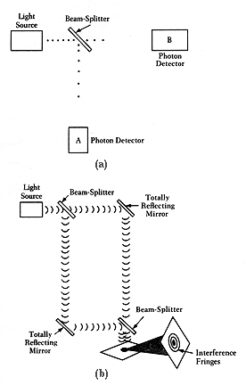

Figure 8-2
In (a) light is made to pass through a beam-splitter. If the intensity of the light is lowered to a single photon "particle" at a time, then each should either pass through and be detected at B or be reflected and be detected at A. Detections at A and B should not be recorded simultaneously. In (b) the detectors are replaced with totally reflecting mirrors. If light is a wave, even if the intensity of the light is lowered to a single photon, it will be split and show an interference effect when the beams are recombined. How can the same radiation be consistent with a "particle" picture in (a), and a "wave" picture in (b)? If the radiation is in both channels (b), why is the detection of photons not simultaneous in (a)?
